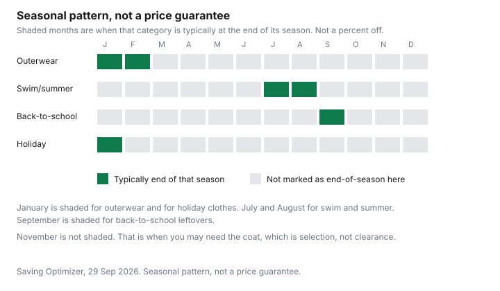

Clothing · Canada
The Best Time to Buy Clothes in Canada: A Month-by-Month Calendar
Households buy clothes when the child grows, when the coat fails, or when the office changes the rules. That timing is often the expensive timing, because it is the middle of the season. A Canadian calendar has to follow snow, rain, and the school year. It is not a copy of a US list that ignores a January that is still winter. This page is season logic. It does not state a discount percent. Where a retailer has not published an event, none is invented.
Disclosure: Cash-back portal offers and discounted retailer gift cards are offer types. Saving Optimizer may earn a commission if a partner link is added later. No partnership is claimed. An offer type does not move a clearance month. Education only.
Key takeaways
- End of season is when that category is cleared. January and July are the two wide windows. No percent off is attached to either.
- Outerwear and boots: early fall has the sizes. Late winter has the leftovers. November is need, not clearance.
- Black Friday 2026 is Friday 27 November. Cyber Monday is Monday 30 November. Boxing Day is Saturday 26 December. Back-to-school and Thanksgiving sit in the same autumn.
- Online and in-store are different ways to see a markdown. Only track a price where a real history exists. Amazon.ca has its own guide.
- Build a list of what you will replace, and buy when that list meets a clearance month. A panic buy is the in-season price.
How the Canadian retail clothing year runs: end-of-season clearances
Retailers bring a season in before you need it, sell it while you need it, and clear what is left when the next season arrives. The saving, when there is one, sits in that third step. The cost of the third step is the size run. A Canadian winter makes the third step late. Coats are still being worn in February in much of the country, so "end of season" is not a warm-climate January. Summer clearance can start while evenings are still warm, because the floor has to become fall.
That is season logic, not a guaranteed price. The Competition Bureau's ordinary-price guidelines, dated 16 October 2009 and checked 29 Sep 2026, are how you test a "was" price. The tests are summarized on the Black Friday and Boxing Day clothing guide. A clearance sign can be honest and still not be your size. The Bureau's page also says the guidelines are under review after Competition Act changes.
January and July: the two big clearance windows
January is the wide window for winter leftovers and for holiday clothes that did not leave the store. July is the wide window for summer. They are not equal for every category. A wool coat in July is a oddity. A swimsuit in January is the mirror image. Use the month for the category that just ended, and ignore the rest of the floor.
Neither month gets a percent on this page. Canadian Tire's cycles are one banner's published pattern, useful if you are in that store, not a national coat calendar. If your retailer prints an event page, use that page for that event. If it does not, do not borrow another country's percentages.
| Month | Category likely at end of season | Why | Caveat |
|---|---|---|---|
| January | Winter outerwear, boots, holiday clothes | The gift season is over and winter stock has to move | Sizes are already thin. Clearance is not a full size run. |
| February | What is left of winter | The season of need is ending in much of the country, later in others | Your city may still be in deep winter. The rack may not care. |
| March | Late winter leftovers, early transition | Stores turn the floor toward spring | A coat you still need may be gone. Do not wait if you do not own one. |
| April | Little that is "cheap winter." Spring is in season. | New season, not clearance of the new season | In-season prices. Buy only the hole in the audit. |
| May | Summer arrivals, in season | Warm-weather stock is new | Waiting until July is reasonable if you already have something to wear. |
| June | Summer, in season | You are wearing it now | Not the clearance window yet. |
| July | Swim and summer clothes | The second wide clearance window, as fall product needs the floor | Your size may already be gone. No percent is stated. |
| August | Summer leftovers, and back-to-school at regular prices | School shopping is demand, not clearance | Do not expect school basics to be the July swimsuit story. |
| September | Back-to-school leftovers after classes start | The rush is over | Early fall outerwear is arriving in season, not on clearance. |
| October | Outerwear in season | This is when many households discover the coat is finished | Fuller sizes, and usually not the lowest ticket. Thanksgiving weekend is demand, not a national clothing percent. |
| November | Still outerwear season. Black Friday is Friday 27 November 2026. Cyber Monday is Monday 30 November. | You may already need the coat. The weekend is a sale event, not the end of winter. | See the clothing-weekend guide. Appliance advice for those dates is a different page. |
| December | Holiday gifts, then Boxing Day on Saturday 26 December 2026 | Gifts are in-season demand. Boxing Day is the first big clear of that stock. | Holiday return windows are whatever the store publishes for this year. Do not reuse last year's dates. |

Outerwear and boots: early fall vs late winter trade-offs
Early fall is when you can try a coat and a boot in your size, over the clothes you will wear. Late winter is when the unsold ones are discounted in the ordinary sense of a clearance, and your size may be the one that sold in November. The trade is selection against whatever price cut that store actually prints. This page will not fill in the cut. The coat guide and the boot guide are how to decide if the garment is worth owning once the ticket is in front of you.
If you do not own a safe coat, do not wait for February to be brave. If you own one that still works, January is a reasonable time to replace it for next year, in a size you still wear. Boots follow the same split, with the extra problem that fit is harder to guess.
Back-to-school, Thanksgiving, Black Friday and Boxing Day in one view
August and early September are back-to-school demand. That is a reason prices hold, not a secret percent. Thanksgiving, in October, is a shopping weekend in a lot of flyers. It is not, on any page opened here, a national clothing clearance with a stated depth. Black Friday and Cyber Monday 2026, and Boxing Day, are dated in the table. Appliance timing for those weekends is the appliance guide. Clothing timing is the clothing weekend guide. Do not mix the categories.
A price adjustment is how a purchase in one of these weeks might meet a lower price later. Read the exclusions. Many policies exclude the big weekend or shorten the window. Assume nothing.
Online vs in-store markdown patterns
In store you can try the size and see the final-sale sign. Online you can sometimes see a price history. Those are different advantages. This draft did not open a study that says one channel always marks down first. Do not treat that as a rule. Use the Amazon.ca price tracker for Amazon.ca household tracking, and do not paste that method onto a site that has no history. Flyers are the written price when a banner prints one. A screenshot of today's ticket, dated, is the minimum record.
Return postage can erase an online markdown. Read who pays it before you call the online price lower. The return guide is the general Canadian position. The store's own page is the rule for that order.
Build your own list so you buy when prices drop, not when you panic
Write the replace list from the wardrobe audit: coat, boots, work pieces, kids' kit, nothing else. Put each line on the month when that category is at end of season, and on the month when you will be in trouble if you do not own it. If those months differ, you are choosing selection or leftovers on purpose. A cash-back portal or a discounted gift card, as offer types, can sit on the purchase you already decided to make. They are not a reason to add a line.
Check the ordinary price when you buy. A crossed-out number is a claim. The Bureau's tests are the check, with the caveat that the guidelines are dated 2009 and under review. Then stop. A calendar that sends you into the store without a list is how end-of-season clearance becomes a full closet and nothing to wear.
Sources & date stamps
- Competition Bureau, Ordinary Price Claims, guidelines dated 16 October 2009, checked 29 Sep 2026. Volume and time tests. The page says the guidelines are being reviewed after Competition Act changes. No clothing discount percent was taken from this page. The Bureau's $100 and $50 pair is a hypothetical, not a Canadian ticket.
- Calendar dates: Friday 27 November 2026, Monday 30 November 2026, Saturday 26 December 2026. Month roles are season logic, not a retailer's published percent.
- No retailer event page stating a clothing discount percent was used. Where a banner has not published a figure, none is printed.
Frequently asked questions
When is the cheapest time to buy clothes in Canada?
The cheap moment is the end of that garment's season, when stores clear what did not sell, and this page does not put a percent on it. January and July are the two wide windows. A coat you need in November is often bought in season, because the size matters more than a later leftover. Check the ordinary price rather than the word clearance.
When do winter coats go on clearance?
After the season of need, which is the late-winter rack, especially January and February, with Boxing Day as a December point on the way there. Early fall is when the sizes are fullest and the coats are not leftovers. No coat percent was opened. If your size is gone, the clearance is not your price.
Is January better than Boxing Day for clothes?
January is later, so more of the unsold winter stock has to move, and more sizes are already gone. Boxing Day is Saturday 26 December 2026, still inside the season of need. Better depends on whether you can wear what you own and whether the size is there. The clothing-weekend guide is that decision. No national percent says January always wins.
When do summer clothes go on sale?
When summer is ending, which on this calendar is July and August, the second wide clearance window. Buying summer clothes in May is buying them in season. Buying them in September can be a leftover, if your size remains. Again, no percent is stated.
How do I track a price before buying?
Write the price down, or use a tracker where you have one. The Amazon.ca tracker guide is for Amazon.ca, not for every clothing site. Flyers, when a banner publishes them, are the other written price. A screenshot of a compare-at tag is not a price history. Re-check the ordinary-price tests before you treat a drop as a saving.